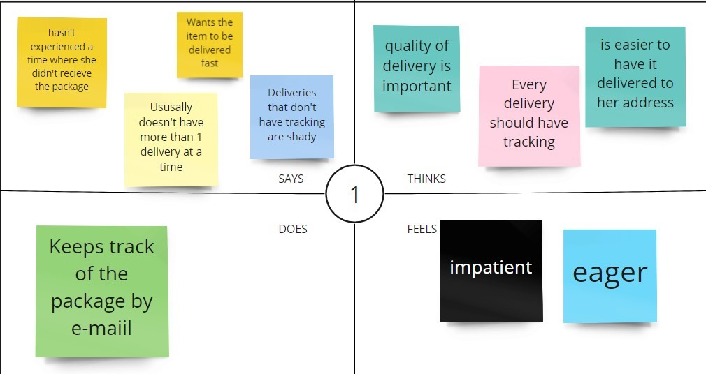
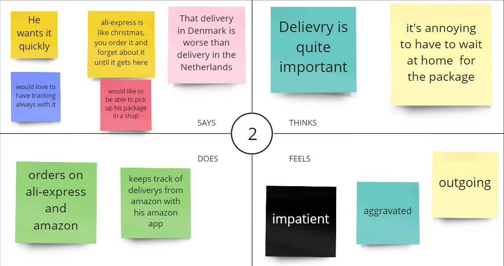
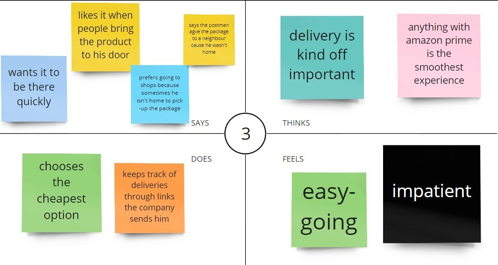
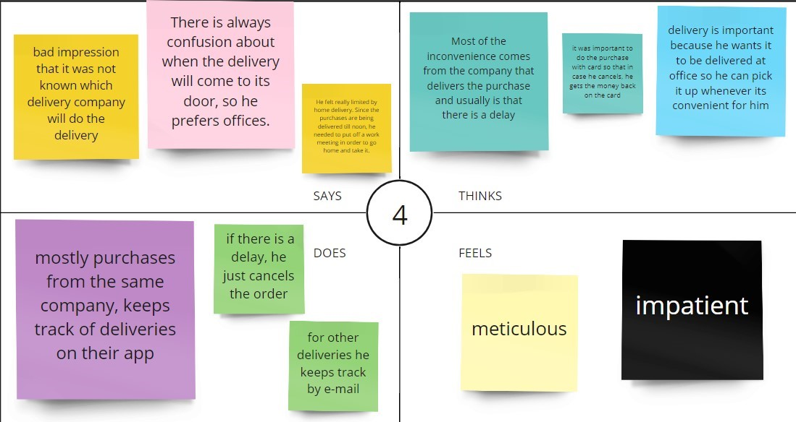
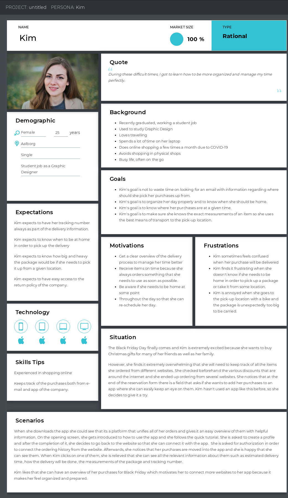
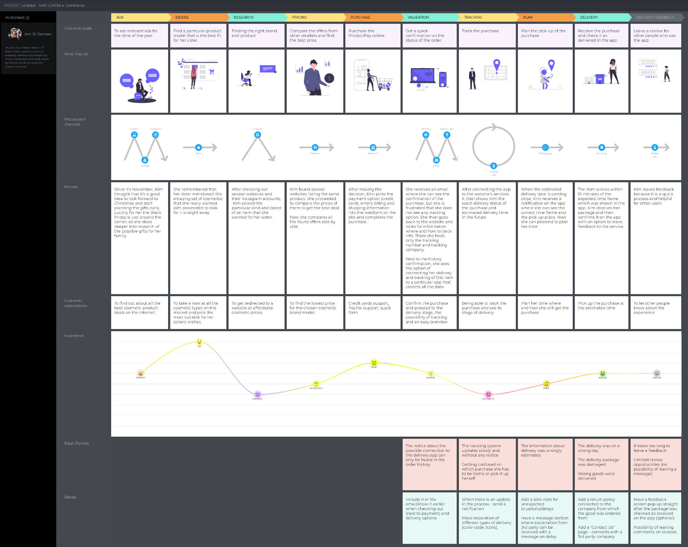
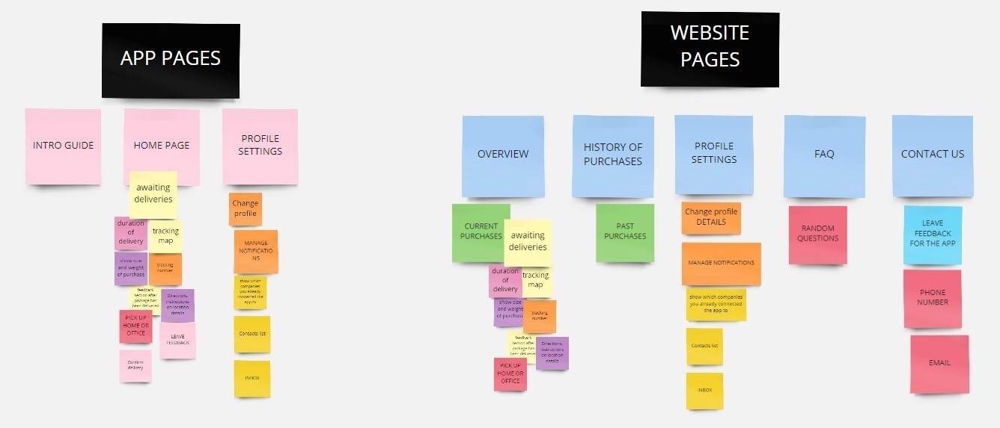
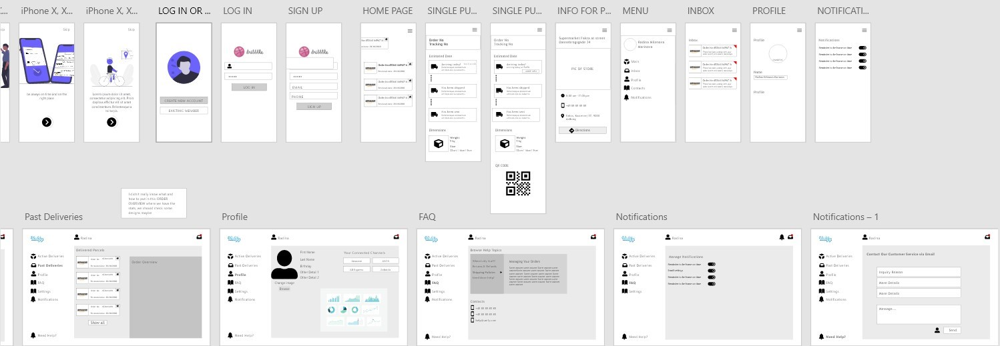
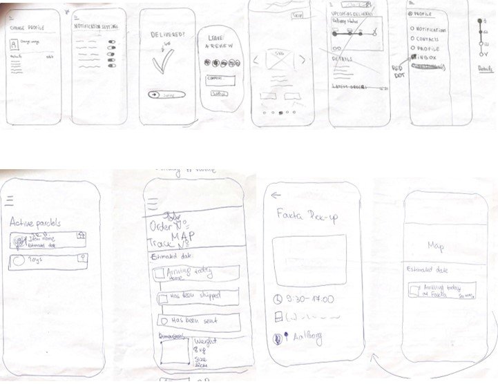

Client: Wicked Problem -
My role: UX/UI Research, Design
Go and see the final version Check out ReportProblem:
Due to the current situation of COVID-19 the e-commerce shopping has immensely increased in all sectors. Both men and women are found to be shopping online and avoid in-store experiences which means that they need to pick up more orders and be concerned with what will be delivered and when. This results into the majority have trouble getting overview of their purchases after being ordered online since every web-shop shares different standards for reservation confirmation and delivery process. This grows into mixed information in each person’s mailbox and makes it hard to keep track on all orders.
In order to create the desired user experienced, me and my group performed detailed user research by conducting qualitative interviews and gather quantitative data. After we had enough data to work with, we coded our interviews and worked with Empathy Maps so that we can understand our user's needs
   With the help of empathy maps we build our persona that was later on used to create user-journey map in order to see the touchpoints, channels and pain points of the user jouney and give us some directions which features might be useful to build the app
 Affinity Diagrams were used as a method to cluster the pieces of data into meaningful groups and sub-groups based on their internal relationships. Also, by building affinity diagrams it helped the group to imagine the information architecture of the pages.
During the process of creating the design of the product, me and my group used prototyping within Design Thinking. We went through 2 iterations. Starting with paper prototyping for quick sketch of our ideas and then moving on to Adobe XD to create the wireframes.
 